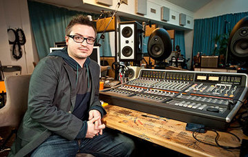
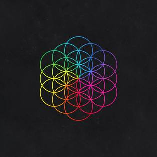
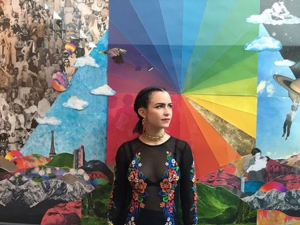
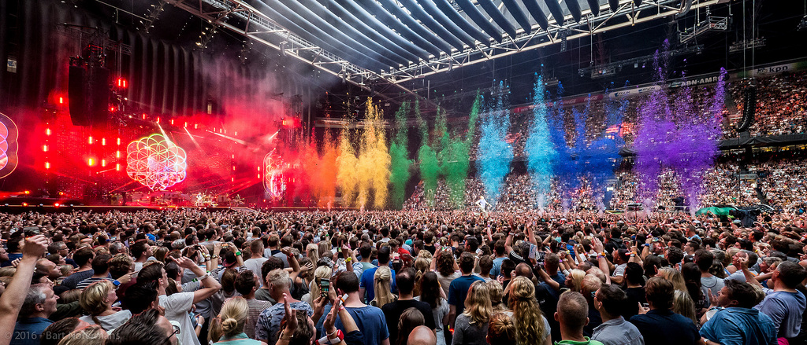

A Head Full Of Dreams: Historia
Las grabaciones de A Head Full of Dreams comenzaron incluso antes de finalizar la promoción de su predecesor, Ghost Stories. Como la gira Ghost Stories Tour fue muy breve, tuvieron bastante tiempo para volver al estudio. El álbum se grabo en The Bakery y The Beehive, dos estudios pertenecientes a la banda.
Para la producción de este álbum, la banda contó con el productor Rik Simpson y el dúo noruego Stargate. Los primeros datos respecto al álbum fueron que sería totalmente opuesto a Ghost Stories, como "la noche y el día". En septiembre de 2015, Chris Martin explicó que lo que buscaban con este nuevo álbum era crear algo "colorido y edificante". Además, insinuó que el nuevo álbum seria muy bailable.

Durante las grabaciones, la banda tomó influencias de los últimos artistas del panorama actual: Flo Rida o DJ Snake entre otros. A su vez también tomaron influencias del dance-rock de los noventa.
Formas caleidoscópicas y la Flor de la Vida fue el diseño principal del disco. La Flor de la Vida es un figura geométrica presente desde la antigüedad. Tiene diferentes significados en todo el mundo y es un diseño típico en muchas contrucciónes y obras de arte.

Pilar Zeta fue la artista que creó todo el diseño del álbum.

A Head Full of Dreams fue publicado el 4 de diciembre de 2015. En comparación con sus anteriores álbumes, este no tuvo tantas ventas iniciales. Aun así fue el octavo álbum más vendido en Reino Unido. El álbum subió al número uno en Reino Unido tras el concierto del Super Bowl 50. Las críticas hacia el disco fueron mixtas. Por una parte Rolling Stone lo describió como el álbum más brillante de Coldplay hasta la fecha. Otros medios como The Guardian criticaron la vagancia del grupo al crear un disco con ritmos fáciles y comerciales.
La gira A Head Full of Dreams Tour comenzó en 2015 y se extendió hasta 2017. En comparación con la corta gira Ghost Stories Tour, la de este álbum superaría incluso a la más extensa que hicieron hasta la fecha: La gira Mylo Xyloto Tour. La gira presenta escenarios similares a los que lleva usando la banda des hace tiempo. Luces y pantallas luminosas que envuelven al público en un espectáculo muy visual.

Fuente: Play Feel